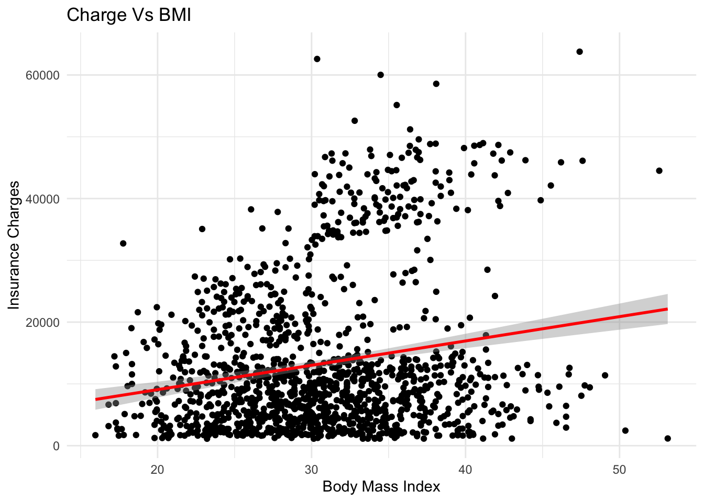
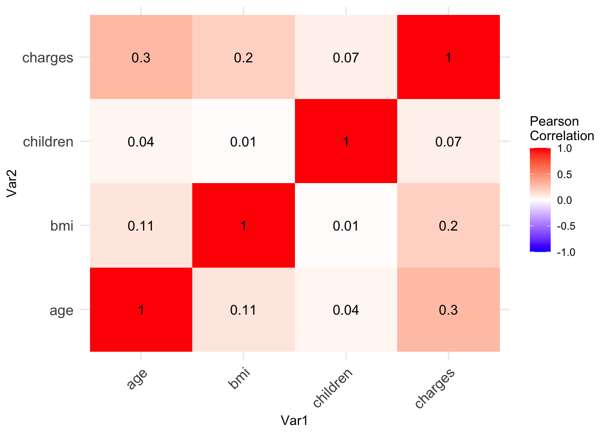
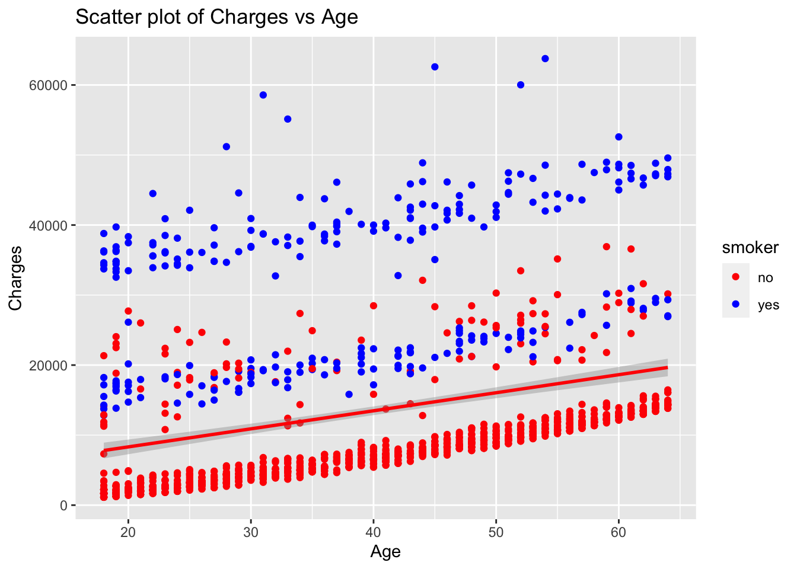
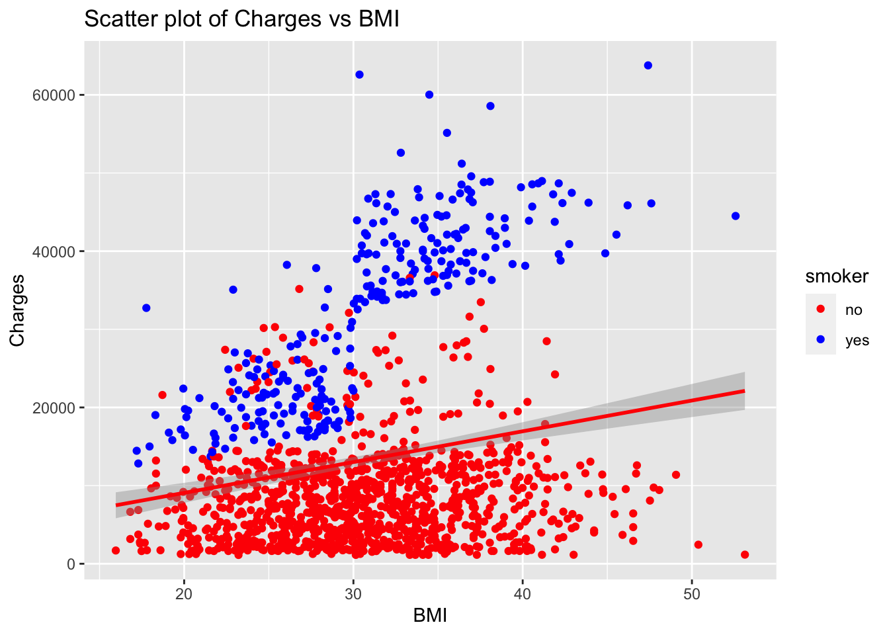
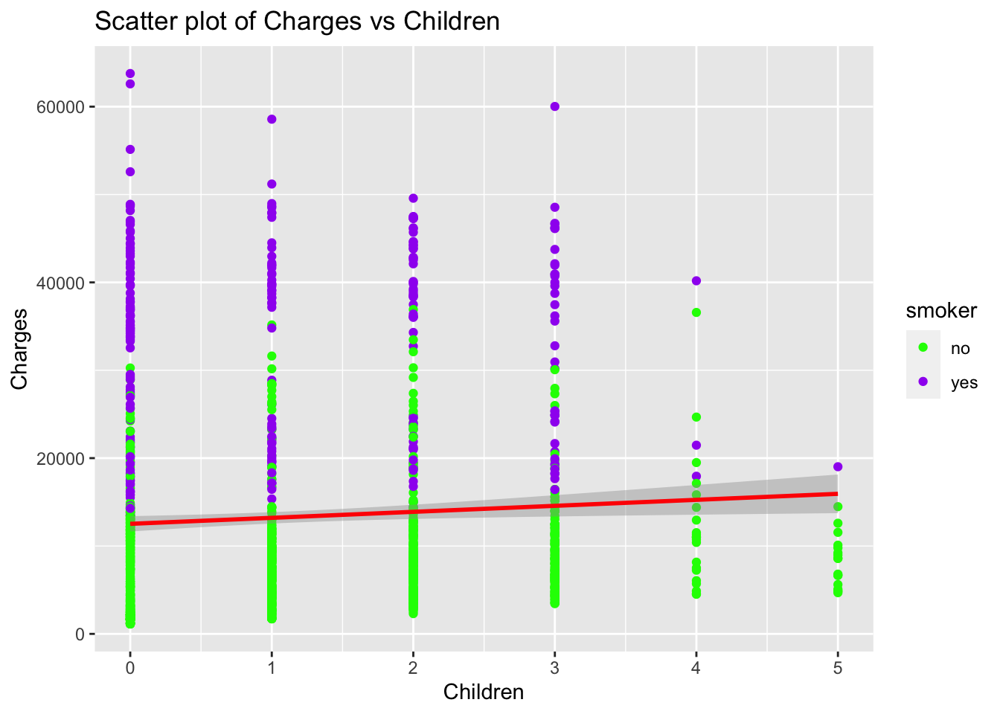
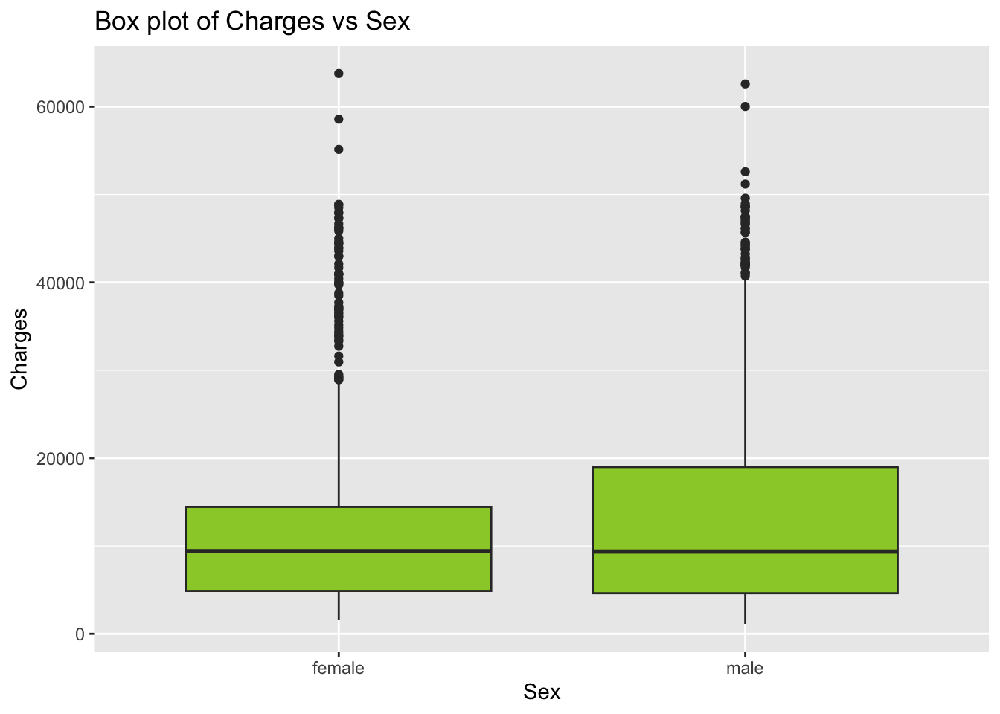
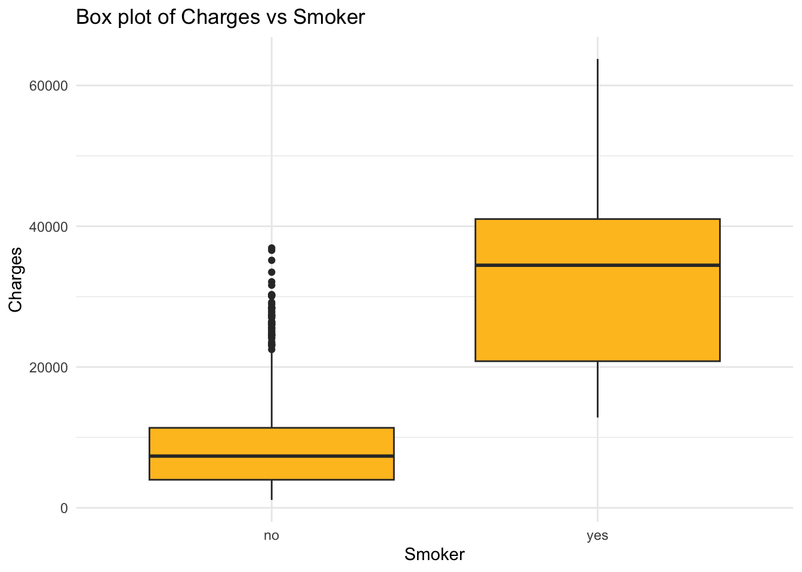
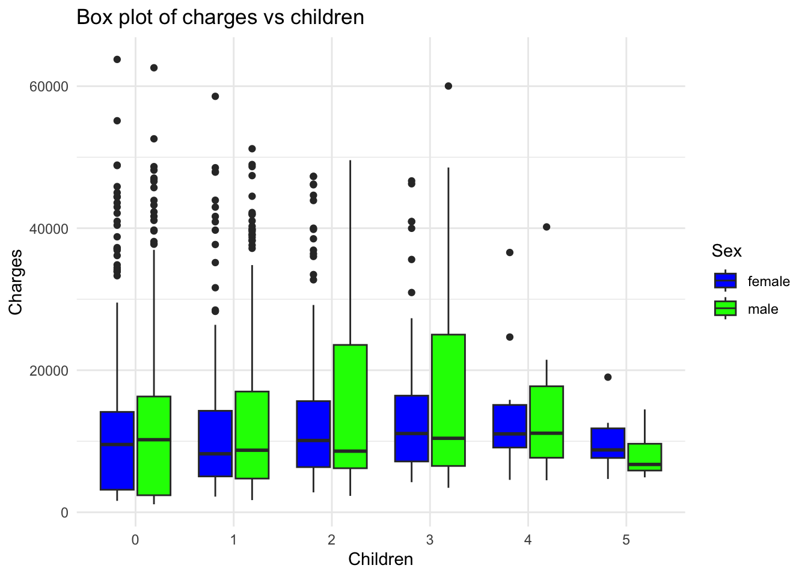

Linear regression is a powerful statistical method that allows us to examine the relationship between two (simple linear regression) or more (multiple linear regression) variables. A key feature of linear regression is its simplicity and interpretability. It’s used in various fields, including machine learning, most medical fields, and social sciences.
Linear regression models the relationship between two variables by fitting a linear equation to observed data. The steps to perform multiple linear regression are almost identical to those of simple linear regression.
Types of regression:
a. Simple linear regression: In this case, we use only one input variable
b. Multiple linear regression: In this case, We use multiple input variable
The Dataset:
There are seven columns and 1338 rows in the data, which indicates that there are seven separate variables. The remaining six variables—age, sex, bmi, children, smoker, and region—are independent variables, whereas charges is the target variable in this instance. To examine the data, multiple linear regression must be fitted because there are several independent variables. You can access this data from here.
Assumptions:
There are several assumption for the linear regression model that I am using in this blog. They are explained below, lets take a look.
Linearity: The relationship between the independent and dependent variables is linear. This assumption can be checked by plotting the variables and examining the data scatter.
Independence: The residuals (the differences between the observed and predicted values) are independent. In other words, there is not a specific pattern in the residuals.
Homoscedasticity: The variance of the residuals is constant across all levels of the independent variables. This means that the spread of the residuals should be similar for all predicted values.
Normality: The residuals are normally distributed. If this assumption is violated, then the confidence intervals may not be accurate.
Absence of multicollinearity: In the case of multiple linear regression, the independent variables should not be too highly correlated with each other.
# Load the data into Rdata <-read.csv('/Users/test/Desktop/Kamal/Virginia_Tech_PhD/First semester/Machine_learning/mlblog/kamalchhetrii.github.io/insurance.csv')# Lets see the couple of rows of this datahead(data)
age sex bmi children smoker region charges
1 19 female 27.900 0 yes southwest 16884.924
2 18 male 33.770 1 no southeast 1725.552
3 28 male 33.000 3 no southeast 4449.462
4 33 male 22.705 0 no northwest 21984.471
5 32 male 28.880 0 no northwest 3866.855
6 31 female 25.740 0 no southeast 3756.622
# Handle missing values (if any)# data <- na.omit(data) # drops rows with missing values# data <- data[complete.cases(data), ] # drops rows with missing values# data$column <- ifelse(is.na(data$column), mean(data$column, na.rm = TRUE), data$column) # fills missing values with mean
In my case, the data does not contain the null values; however, if you select the data with the null values and want to analyze the data, it is important to deal with the null values before proceeding further analysis. Different ways to deal with the null values in R is given in the code above.
Upon executing the above code, we got the value 0, which means there are no missing values in the data. Since we don’t have any null or missing values in this data, as indicated above. So, no further handling of missing data is needed.
Visualize the data: for better understanding of the data before proceeding further:
# Visualize the dataggplot(data, aes(x=bmi, y=charges)) +geom_point() +geom_smooth(method=lm, col="red") +labs(x="Body Mass Index",y="Insurance Charges",title="Charge Vs BMI") +theme_minimal()
`geom_smooth()` using formula = 'y ~ x'

Lets take a look for the correlation between these two features: Our data contains one column “Species” which is non-numeric. Thus, we will firstly subset the data that doesnot contains “Species” column.
# Subset the data to include only numeric columnsdata_numeric <- data[, sapply(data, is.numeric)]# Calculate the correlation matrixcorrelation_matrix <-cor(data_numeric)# Print the correlation matrixprint(correlation_matrix)
age bmi children charges
age 1.0000000 0.1092719 0.04246900 0.29900819
bmi 0.1092719 1.0000000 0.01275890 0.19834097
children 0.0424690 0.0127589 1.00000000 0.06799823
charges 0.2990082 0.1983410 0.06799823 1.00000000
Create the heatmap for better visualization:
# Melt the correlation matrix into a long formatdata_melt <-melt(correlation_matrix)# Create a heatmap with ggplot2ggplot(data_melt, aes(x=Var1, y=Var2, fill=value)) +geom_tile() +geom_text(aes(label =round(value, 2)), size =4) +scale_fill_gradient2(low="blue", high="red", mid="white", midpoint=0, limit=c(-1,1), space="Lab", name="Pearson\nCorrelation") +theme_minimal() +theme(axis.text.x =element_text(angle =45, vjust =1, size =12, hjust =1),axis.text.y =element_text(size =12))

We can see no strong correlation between different variables from the heatmap created using the above code. However, this part is made to visualize the data only.
Lets explore the data for charges by region:
# Sum 'charges' grouped by 'region'charges <-aggregate(data$charges, by=list(data$region), FUN=sum)# Sort the data frame by 'charges' in ascending ordercharges <- charges[order(charges$x, decreasing=FALSE), ]# Create a bar plotggplot(charges[1:5, ], aes(x=Group.1, y=x, fill=x)) +geom_bar(stat="identity") +coord_flip() +labs(title="Sum of Charges by Region", x="Region", y="Charges") +theme_minimal() +scale_fill_gradient(low ="lightgreen", high ="blue")
Therefore, the Southeast has the highest overall medical costs, whereas the Southwest has the lowest.
It is always interesting to explore the data; in this case, I am interested in seeing how smoking habits affect the charges associated with insurance. Let’s explore this below:
# Create a scatter plot for 'age' vs 'charges' colored by 'smoker'p1 <-ggplot(data, aes(x=age, y=charges, color=smoker)) +geom_point() +stat_smooth(method="lm", col="red") +scale_color_manual(values=c("red", "blue")) +labs(title="Scatter plot of Charges vs Age", x="Age", y="Charges")# Create a scatter plot for 'bmi' vs 'charges' colored by 'smoker'p2 <-ggplot(data, aes(x=bmi, y=charges, color=smoker)) +geom_point() +stat_smooth(method="lm", col="red") +scale_color_manual(values=c("red", "blue")) +labs(title="Scatter plot of Charges vs BMI", x="BMI", y="Charges")# Create a scatter plot for 'children' vs 'charges' colored by 'smoker'p3 <-ggplot(data, aes(x=children, y=charges, color=smoker)) +geom_point() +stat_smooth(method="lm", col="red") +scale_color_manual(values=c("green", "purple")) +labs(title="Scatter plot of Charges vs Children", x="Children", y="Charges")# Print the plotsprint(p1)
`geom_smooth()` using formula = 'y ~ x'

print(p2)
`geom_smooth()` using formula = 'y ~ x'

print(p3)
`geom_smooth()` using formula = 'y ~ x'

Overall, the insurance charge is significantly higher for an individual who smokes.
# Create a box plot for 'charges' vs 'sex'p1 <-ggplot(data, aes(x=sex, y=charges)) +geom_boxplot(fill="yellowgreen") +labs(title="Box plot of Charges vs Sex", x="Sex", y="Charges")# Create a box plot for 'charges' vs 'smoker'p2 <-ggplot(data, aes(x=smoker, y=charges)) +geom_boxplot(fill="goldenrod1") +theme_minimal() +labs(title="Box plot of Charges vs Smoker", x="Smoker", y="Charges")# Print the plotsprint(p1)

print(p2)

According to the plot, the average insurance cost for men and women is roughly the same at $5,000. The insurance costs for smokers in the right plot vary significantly from those for non-smokers; the average cost for a non-smoker is about $5,000. The minimum insurance premium for smokers is $5,000.
# Create the box plotggplot(data, aes(x =as.factor(children), y = charges, fill = sex)) +geom_boxplot() +scale_fill_manual(values =c("blue", "green")) +theme_minimal() +labs(title ="Box plot of charges vs children", x ="Children", y ="Charges", fill ="Sex")

We can see some outliers data in different children age group.
Building the model and prediction:
From the above code and analysis, we understand about the data and its distribution. Now, we can build model that fits for our data. In this particular case, we are going to use the linear regression model.
Model evaluation: After building the model, its time to see how good the model is. We evaluate the model based on its performance which involved root mean square error (rmse) and R squared value.
# Set the seed for reproducibilityset.seed(0)# Create the independent variable data framex <- data[, !(names(data) %in%"charges")]# Create the dependent variable vectory <- data$charges# Split the data into training and testing setssplit <-sample.split(y, SplitRatio =0.8)x_train <- x[split, ]y_train <- y[split]x_test <- x[!split, ]y_test <- y[!split]# Fit a linear regression modelLin_reg <-lm(y_train ~ ., data =cbind(x_train, y_train))# Print the intercept and coefficientsprint(paste("Intercept: ", Lin_reg$coefficients[1]))
Lets learn little bit about rmse: The Root Mean Square Error (RMSE) is a frequently used measure to evaluate the prediction errors of a regression model. It tells us about the distribution of the residuals (prediction errors), with a lower RMSE indicating a better fit for the data.
During model evaluation, RMSE serves as a measure to understand the model’s performance. Specifically, it reveals how close the predicted values are to the actual ones. An RMSE of zero indicates perfect predictions, which, in practice, is highly unlikely if not impossible.
In this case, the R-squared value is approximately 0.7364, which means that our model explains about 73.64% of the variance in the charges.